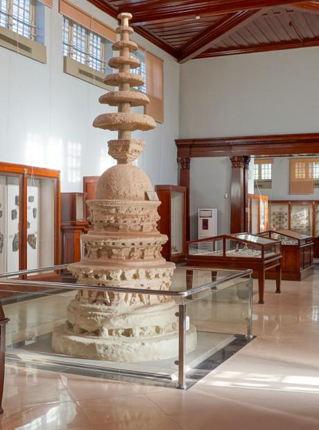
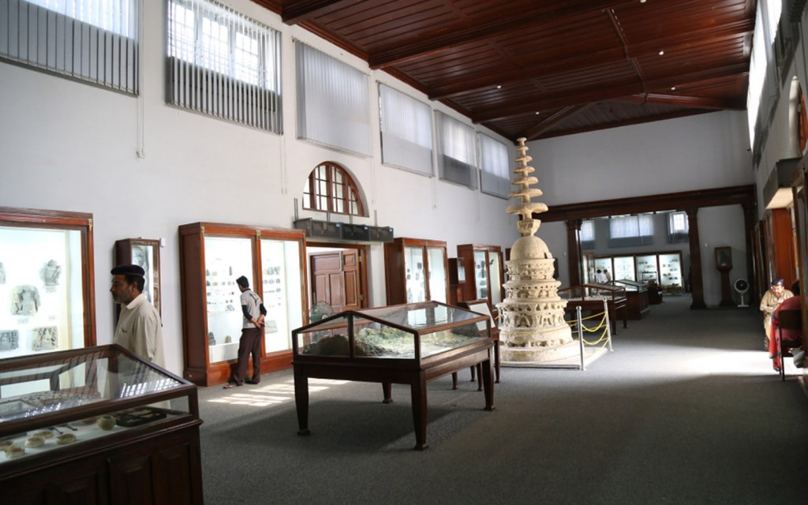

Problem Space
As museums broaden their missions and seek to attract new audiences, they are recognizing the need to create experiences that are meaningful, accessible, and relevant to a wide range of learners. They are experimenting with new ways of imparting knowledge through interactive exhibits and mobile apps, participatory storytelling, collaborative participation and are exploring technology like AR/VR/MR to enhance the visitor experience.
For our project, our main goal was to assist museums in harnessing technology to create innovative solutions that cater to the needs and interests of specifically middle school students. We propose an enhanced and meaningful visit for them. With our proposed solution, we wanted museums become more inclusive and effective educational spaces by providing tailored solutions.

Problem Statement
In order to make the project more relatable and to focus on a context with significant room for improvement, we decided to focus our scope to a museum in South Asia. Based on our personal experience and research, we found that museums in this region often lack interactivity, making them unengaging for visitors, and also suffer from poor management.
After careful consideration and consulting with a museum expert from Pakistan, we chose the Taxila Museum in Pakistan as our project context. This museum houses a significant and diverse collection of Gandharan art dating from the 1st to the 7th centuries CE. Many of the objects in the collection were excavated from the ruins of ancient Taxila. Furthermore, the museum is surrounded by a number of historical sites, providing visitors with a rich cultural experience.